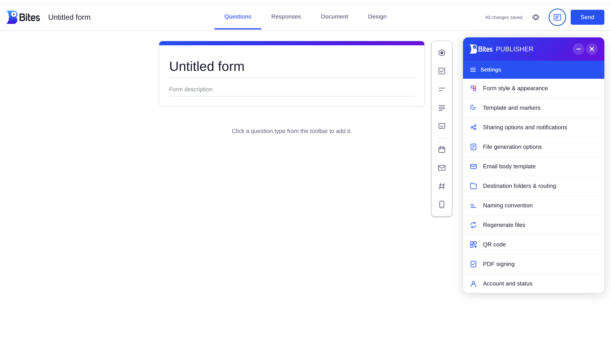

Bites Forms
Clients were bouncing between a form tool and a signing tool to finish what should have been one process. I designed and shipped a single flow that does both — structured responses and legally binding signatures in one place.
Bites clients constantly need two things from their frontline teams: structured information (surveys, applications, checklists, orders) and signed documents (policies, agreements, acknowledgements).
No single tool did both. So every client ran the same painful workaround: build a form in one product, chase signatures in another, then manually stitch the results together. Two subscriptions, two logins, two exports — for what is really one workflow.
I watched clients repeat this workaround week after week. That repetition is exactly the signal I look for: when users build the same manual bridge twice, the product is missing a road.
Bites Forms is one flow that collects structured responses and captures legally binding signatures in the same place. It ships with everything a client needs to go from blank page to signed, routed document:
- Template gallery — ready-made starting points (customer feedback, event registration, job applications, order forms) plus blank form and PDF options.
- Drag-and-drop builder — question types added from a toolbar, with live preview and autosave.
- PDF signing — upload an existing PDF, place signature boxes, and collect legally binding signatures.
- Automated routing — file generation, naming conventions, destination folders, and email notifications configured per form.
- Sharing built in — links, QR codes, and embed options so forms reach frontline workers wherever they are.


The impact was operational and immediate for the clients who relied on the old workaround:
This project reflects how I work: I noticed a repeated customer workaround, defined the real problem underneath it, and shipped a practical solution — rather than waiting for it to become a formal roadmap item.